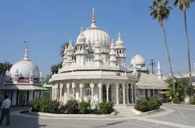
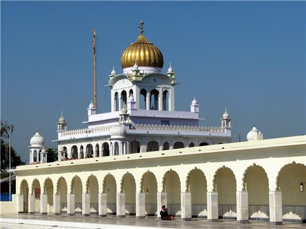

Religions of Madhya Pradesh ‚Äì A Land of Spiritual Diversity üôè‚ú®

üïâ Hinduism (90.89%) ‚Äì The soul of the state, with majestic temples like Mahakaleshwar Jyotirlinga, Omkareshwar Jyotirlinga, Khajuraho Temples & Chitrakoot.
☪ Islam ( 6.57%) – Spiritual echoes at the revered Taj-ul-Masajid, Moti Masjid & Burhanpur.


ü™î Jainism (0.78%) ‚Äì A haven of peace with the intricate Pawaya, Sonagiri, Kundalpur & Khajuraho Jain Temples.
☸️ Buddhism (0.30%) – Sanchi Stupa (UNESCO Site) – One of the most important Buddhist sites in the world, built by Ashoka in the 3rd century BCE.


✝️ Others (3%) – A harmony of Christianity, Sikkhism, and tribal communities.